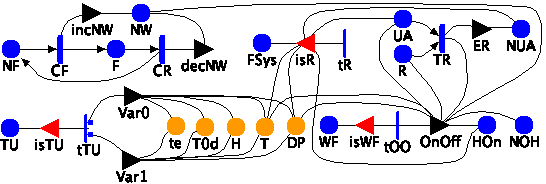

Model: MAD

| Custom Initialization Code |
|---|
// T0 value at time 0 T0d->Mark()=T0Init; // DP value at time 0 DP->Mark()=T0d->Mark()-DPDeltaTInit; // initialize temperature at time 0 T->Mark()=T0d->Mark()+temperatureDeltaInit(SANDAREP::MAD::Index()); // update H updateHumidity(H, T->Mark(), DP->Mark()); |
| Place Names | Initial Markings |
|---|---|
| DP | |
| F | |
| FSys | |
| H | |
| HOn | |
| NF | |
| NOH | |
| NUA | |
| NW | |
| R | |
| T | |
| T0d | |
| TU | |
| UA | |
| WF | |
| te | |
| Timed Activity: | CF |
|---|---|
| Distribution Parameters | Ratereturn c*pow(w, H->Mark()); |
| | 1==1 |
| | 1==1 |
| Timed Activity: | CR |
|---|---|
| Distribution Parameters | Ratereturn mu; |
| | 1==1 |
| | 1==1 |
| Timed Activity: | TR |
|---|---|
| Distribution Parameters | ValueTRec |
| | |
| | |
| Instantaneous Activity: | tTU |
|---|---|
| | case 11-pTVarcase 2 pTVar |
| Instantaneous Activities Without Cases: |
|---|
| tOO |
| tR |
| Input Gate: | isR |
|---|---|
| | T->Mark() <= DP->Mark() && T->Mark() <= 0 && HOn->Mark()==0 && UA->Mark()==0 && SANDAREP::MAD::WF->Deps(0)->Mark()==0 |
| | UA->Mark()=1; // unavailable switch NUA->Mark()++; // shared place, number of unavailable switches if( FSys->Mark()==0 ) FSys->Mark()=1; // failed system |
| Input Gate: | isTU |
|---|---|
| | SANDAREP::MAD::TU->Deps(0)->Mark()==1 |
| | SANDAREP::MAD::TU->Deps(0)->Mark()=0; |
| Input Gate: | isWF |
|---|---|
| | SANDAREP::MAD::WF->Deps(0)->Mark()==1 |
| | SANDAREP::MAD::WF->Deps(0)->Mark()=0; |
| Output Gate: | ER |
|---|---|
| | NUA->Mark()--; // shared place, number of unavailable switches |
| Output Gate: | OnOff |
|---|---|
| |
if( UA->Mark()==0 ) { // not frozen switch
if ( HOn->Mark()==1 &&
( ( SANDAREP::MAD::NW->Deps(0)->Mark() == 0 && Alg1LogicOff(T, DP, delta, delta) ) ||
( SANDAREP::MAD::NW->Deps(0)->Mark() > 0 && Alg2LogicOff(T, delta) ) )
) { // Off
HOn->Mark()=0;
NOH->Mark()--;
} else if( HOn->Mark()==0 &&
( ( SANDAREP::MAD::NW->Deps(0)->Mark() == 0 && Alg1LogicOn(T, DP, delta, delta) ) ||
( SANDAREP::MAD::NW->Deps(0)->Mark() > 0 && Alg2LogicOn(T, delta) ) )
) { // On
HOn->Mark()=1;
NOH->Mark()++;
}
} else { // On: recovery after frozen switch
if( R->Mark()==0 ) { // not yet enabled recovery
R->Mark()=1; // enable recovery
HOn->Mark()=1; // On
NOH->Mark()++; // On counter
}
}
|
| Output Gate: | Var0 |
|---|---|
| | /* update T and H for each heater */ // update T, T meets the trend (Var0) updateVar0Temperature(T, T0d->Mark(), te->Mark(), BaseModelClass::LastActionTime, t, temperatureCoeff(SANDAREP::MAD::Index())); // update H updateHumidity(H, T->Mark(), DP->Mark()); |
| Output Gate: | Var1 |
|---|---|
| | /* update T and H for each heater */ // update T, T does not meet the trend (Var1) updateVar1Temperature(T, T0d->Mark(), te->Mark(), BaseModelClass::LastActionTime, t, temperatureCoeff(SANDAREP::MAD::Index())); // update H updateHumidity(H, T->Mark(), DP->Mark()); |
| Output Gate: | decNW |
|---|---|
| | decNW(SANDAREP::MAD::NW->Deps()); debug << "Recovered connection on MAD " << SANDAREP::MAD::Index() << " at Time " << BaseModelClass::LastActionTime<< std::endl; |
| Output Gate: | incNW |
|---|---|
| | incNW(SANDAREP::MAD::NW->Deps()); debug << "Failed connection on MAD " << SANDAREP::MAD::Index() << " at Time " << BaseModelClass::LastActionTime<< std::endl; |